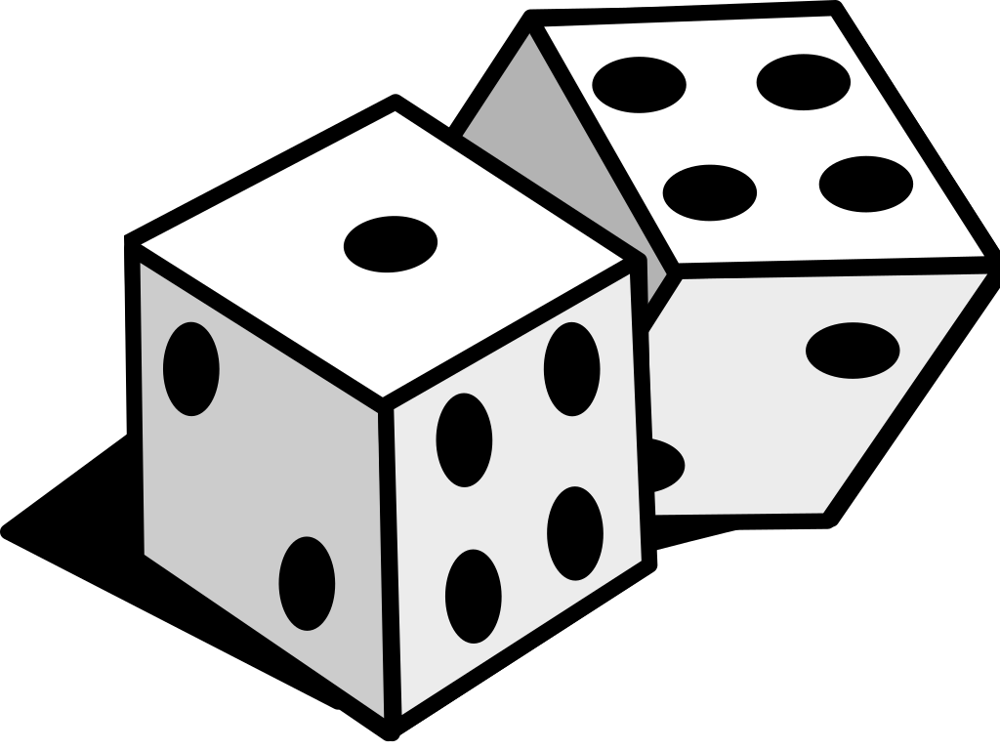

Wilkommen zu Kniffel
Wie viele Spieler gibt es?
Info
Diese App hilft dir Kniffel zu spielen, auch wenn Du gerade keinen Kniffelblock zur Hand hast. Wenn Du auf einem Smartphone bist, kannst du nachdem die Spieler angelegt wurden, ganz einfach mit einem wischen, von rechts nach links zu den einzelnen Spielern wechseln.